ТЕОРЕТИЧЕСКАЯ ЧАСТЬ УРОКА 11
На этом уроке мы работаем со звуком в приложении Windows Forms и разбираем, как программа может воспроизводить аудио при нажатии кнопки. Для этого используется встроенная библиотека System.Media, а именно класс SoundPlayer, который предназначен для простого воспроизведения звуковых файлов. Он работает очень легко: достаточно передать путь к файлу, и звук будет воспроизведён. Однако у этого класса есть ограничение — он поддерживает только формат .wav, поэтому напрямую использовать .mp3 не получится.
Форматы звука отличаются способом хранения аудиоданных. .wav — это несжатый формат, в котором звук хранится практически «как есть», поэтому такие файлы обычно больше по размеру, но при этом максимально просты для обработки и воспроизведения программой. .mp3 — это сжатый формат, который уменьшает размер файла за счёт потери части данных, благодаря чему он широко используется в интернете и на устройствах. Однако из-за своей структуры .mp3 требует более сложных библиотек для воспроизведения, поэтому стандартный SoundPlayer его не поддерживает.
Чтобы использовать звуки в нашем проекте, файлы необходимо правильно добавить в проект Visual Studio. Они должны находиться рядом с исполняемым файлом программы (в папке bin/Debug или bin/Release), потому что при запуске приложение ищет файлы именно там. Для этого используется настройка Copy to Output Directory, которая автоматически копирует файлы в нужное место при сборке проекта.
Также на уроке используется механизм событий Windows Forms. Каждая кнопка имеет событие Click, которое срабатывает при нажатии. Вместо того чтобы писать отдельный код для каждой кнопки, мы используем один общий обработчик и свойство Tag, в котором храним имя звукового файла. Это позволяет сделать код компактным и удобным для расширения.
Дополнительно рассматривается процесс конвертации аудиофайлов. Поскольку у нас могут быть звуки в формате .mp3, мы используем сторонние онлайн-сервисы для перевода их в .wav. Это важный практический навык — умение подготавливать ресурсы для программы.
В завершение ученики узнают, как собрать проект в .exe файл и задать ему иконку. Это позволяет превратить написанную программу в полноценное приложение, которое можно запускать с рабочего стола и использовать вне Visual Studio.
ПРАКТИЧЕСКАЯ ЧАСТЬ
ГЛАВА 1. Создание проекта и интерфейса
button1, button2, button3. На этом этапе важно получить рабочий интерфейс с кнопками, которые будут использоваться дальше для добавления звуков.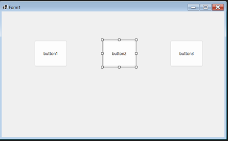
ГЛАВА 2. Переход в код и подключение звуков к кнопкам
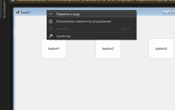
using System.Media; namespace Урок_11 { public partial class Form1 : Form { public Form1() { InitializeComponent(); button1.Tag = ""; button2.Tag = ""; button3.Tag = ""; button1.Click += PlayButtonSound; button2.Click += PlayButtonSound; button3.Click += PlayButtonSound; } void PlaySound(string file) { new SoundPlayer(file).Play(); } void PlayButtonSound(object sender, EventArgs e) { Button btn = (Button)sender; PlaySound(btn.Tag.ToString()); } } }
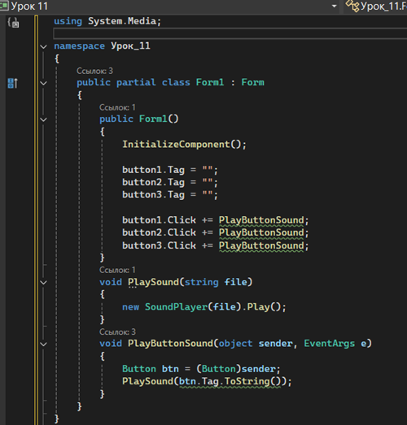
Ниже приведено подробное объяснение каждой части этого кода.
Строка using System.Media; подключает библиотеку для работы со звуком. Именно здесь находится класс SoundPlayer, который будет воспроизводить аудиофайлы.
Далее идёт строка namespace Урок_11. Пространство имён используется для объединения классов проекта в одну логическую группу. Обычно оно совпадает с названием проекта. Ниже объявляется класс Form1, который наследуется от класса Form. Это значит, что Form1 является обычным окном Windows-приложения, на котором можно размещать кнопки и другие элементы.
Внутри класса находится конструктор public Form1(). Конструктор выполняется автоматически при запуске формы. Первая строка внутри него — InitializeComponent(); — создаёт все элементы, которые были добавлены на форму через конструктор Visual Studio. Без этой строки форма не сможет правильно отобразить кнопки и другие элементы.
Следующие строки button1.Tag = "";, button2.Tag = "";, button3.Tag = ""; задают значение свойства Tag для каждой кнопки. Свойство Tag — это специальное дополнительное поле, в котором можно хранить любые данные. В нашем случае в нём будет храниться имя звукового файла, который должна воспроизводить кнопка. Пока в примере оставлены пустые строки, но позже сюда нужно будет вписать имена файлов, например sound1.wav, sound2.wav, sound3.wav.
Далее идут строки button1.Click += PlayButtonSound;, button2.Click += PlayButtonSound;, button3.Click += PlayButtonSound;. Они подключают всем трём кнопкам один и тот же обработчик события Click. Это означает, что при нажатии на любую из этих кнопок будет выполняться метод PlayButtonSound. Такой подход позволяет не писать отдельный код для каждой кнопки, а использовать одну общую логику для всех.
Ниже находится метод void PlaySound(string file). Он принимает один параметр file, в котором должно находиться имя звукового файла. Внутри метода создаётся объект SoundPlayer с указанным именем файла, а затем вызывается метод .Play(), который запускает воспроизведение звука. Таким образом, этот метод отвечает только за проигрывание файла по его имени.
Последний метод void PlayButtonSound(object sender, EventArgs e) является общим обработчиком нажатия для всех кнопок. Параметр sender содержит объект, который вызвал событие, то есть именно ту кнопку, на которую нажали. С помощью строки Button btn = (Button)sender; мы преобразуем объект sender в тип Button, чтобы работать с ним как с кнопкой. Затем строка PlaySound(btn.Tag.ToString()); берёт значение из свойства Tag этой кнопки, превращает его в строку и передаёт в метод PlaySound. В результате при нажатии программа понимает, какая кнопка была нажата, получает связанный с ней файл и воспроизводит нужный звук.
Таким образом, данный код создаёт универсальную систему: каждой кнопке можно назначить свой звук через свойство Tag, а воспроизведение для всех кнопок будет происходить через один общий обработчик. Это делает программу короче, удобнее и понятнее для дальнейшего расширения.
ГЛАВА 3. Подготовка звуковых файлов
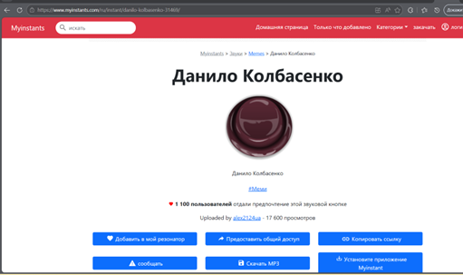
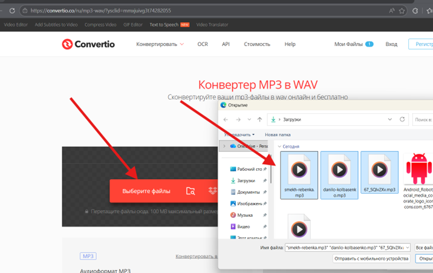
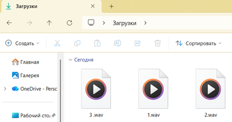
ГЛАВА 4. Загрузка звуков в проект и проверка работы
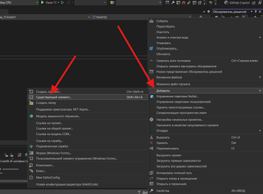
P.S. Выберите все файлы чтоб найти звуки
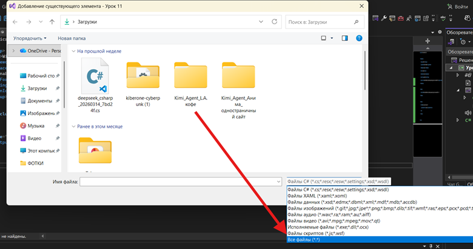
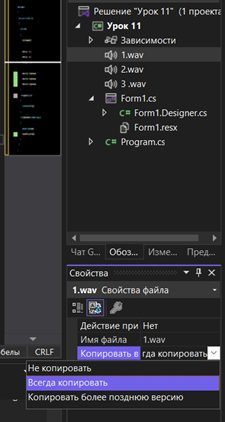
button1.Tag, button2.Tag, button3.Tag указать имена соответствующих файлов: 1.wav, 2.wav, 3.wav.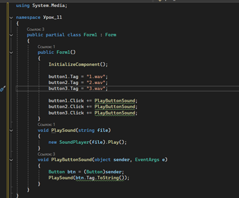
ГЛАВА 5. Установка иконки и создание .exe
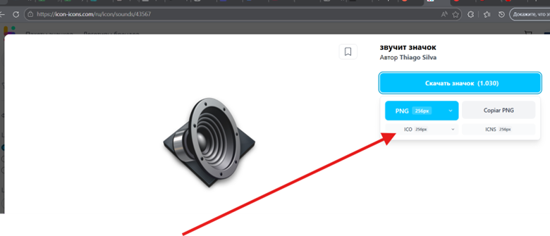
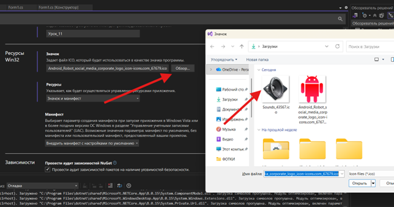
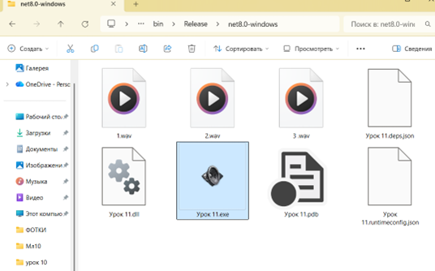
ЗАКЛЮЧЕНИЕ
На этом уроке ученики научились работать со звуком в приложении Windows Forms, подключать внешние файлы к проекту и управлять ими через код. Были разобраны принципы работы с библиотекой System.Media, особенности форматов .mp3 и .wav, а также процесс подготовки файлов для использования в программе. В результате у каждого получилось полноценное приложение с кнопками, которые воспроизводят звук, а также готовая версия программы в формате .exe с собственной иконкой, которую можно запускать с рабочего стола. Это важный шаг к созданию полноценных пользовательских приложений.
ДОПОЛНИТЕЛЬНОЕ ЗАДАНИЕ
Для тех, кто справился быстрее, можно усложнить проект и добавить изображения на кнопки. Для этого нужно скачать картинки, добавить их в проект и установить их в свойстве Image у кнопок через окно свойств или через код. Также можно убрать текст с кнопок и оставить только изображения, чтобы получилась полноценная звуковая панель с визуальными элементами.
Полный код
using System.Media; namespace Урок_11 { public partial class Form1 : Form { public Form1() { InitializeComponent(); button1.Tag = "1.wav"; button2.Tag = "2.wav"; button3.Tag = "3 .wav"; button1.Click += PlayButtonSound; button2.Click += PlayButtonSound; button3.Click += PlayButtonSound; } void PlaySound(string file) { new SoundPlayer(file).Play(); } void PlayButtonSound(object sender, EventArgs e) { Button btn = (Button)sender; PlaySound(btn.Tag.ToString()); } } }